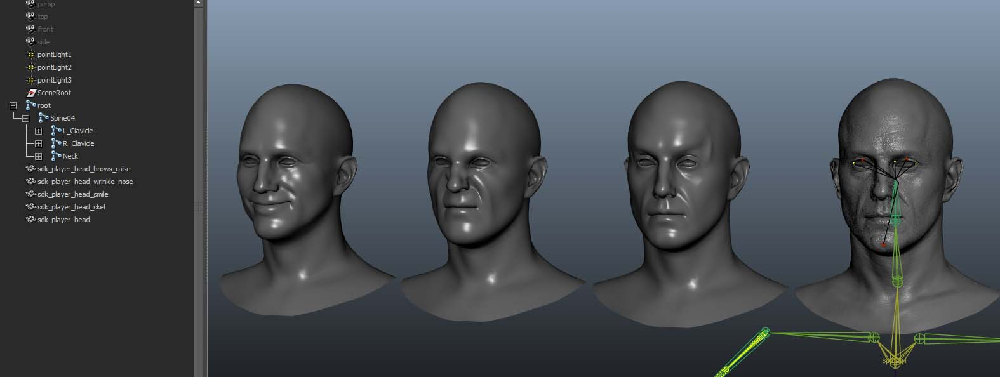

Overview
Sections
This article covers how to create and implement animated Blendshapes for CRYENGINE.
Blendshapes or morph targets - both terms are exchangeable - are different 3D mesh shapes of a model with the same mesh topology. They are primarily used for character facial animation or as correctives of a model to fix a specific (bad) deformation state. Usually, they are either modeled by artists or by scanning physical models, like a human actor's face, and post-processed by software and artists to extract the geometry data. In this tutorial series we will concentrate on Blendshapes used for animation and how to get them into CRYENGINE.
